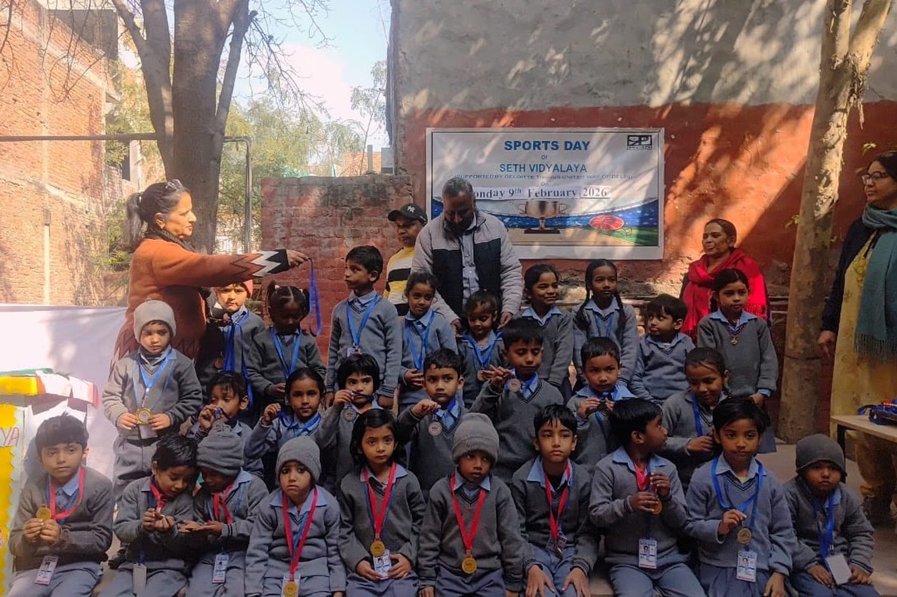
Empowering lives,
transforming communities
A school. A health centre. A place for women to turn to. Prayatn has worked with the same neighbourhoods of Kalkaji, New Delhi since 1992.
Kalkaji, New Delhi. Education, healthcare and women’s development, in one neighbourhood.
A small organisation that stayed in one place
Prayatn is a voluntary organisation and a registered Public Charitable Trust, working with the disadvantaged sections of society since 1992.
We build capabilities, provide education and offer skill development opportunities, so that a dignified and independent life is genuinely within reach.

Three areas, one continuous effort
To the families we serve these are not separate programmes. They are the same life.
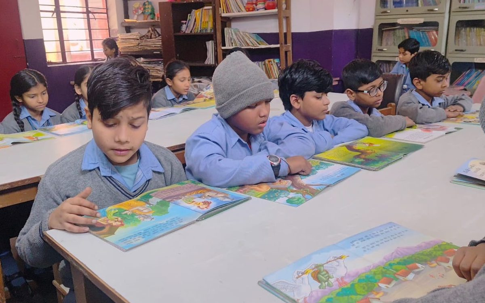
Education
A school in the community, and support for students who would otherwise have to stop.
- Seth Vidyalaya
- Scholarship Scheme
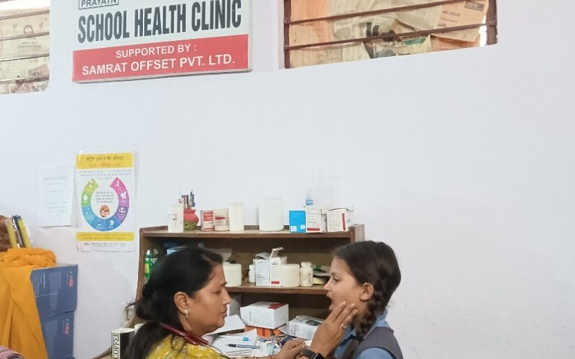
Healthcare
Everyday care close to home, and health programmes that reach children in school.
- Swaasthya Kendra
- School Health Program
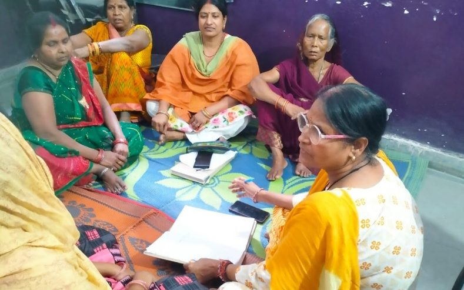
Women Development
Care and support for women survivors of violence, inside the community itself.
- Addressing GBV in Communities
Five projects, running today
 Healthcare
HealthcareSwaasthya Kendra
Our community health centre, for everyday care within walking distance.
 Healthcare
HealthcareSchool Health Program
Check-ups, awareness and follow-up care, taken into the classroom.
 Education
EducationSeth Vidyalaya
Our school. For many children, the first in their family to attend one.
 Education
EducationScholarship Scheme
So that money is never the reason a promising student stops.
 Women
WomenAddressing GBV in Communities
Comprehensive care and support for women survivors of violence.
Everyone should be an equal and active partner in the journey of development, not a beneficiary of someone else’s.Prayatn · working since 1992
Ordinary days, over thirty years
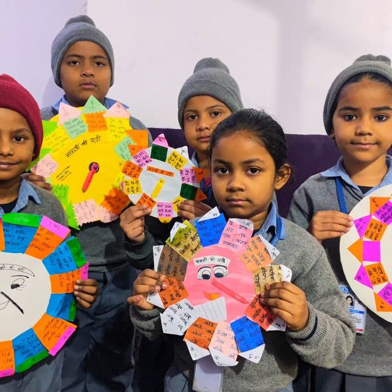
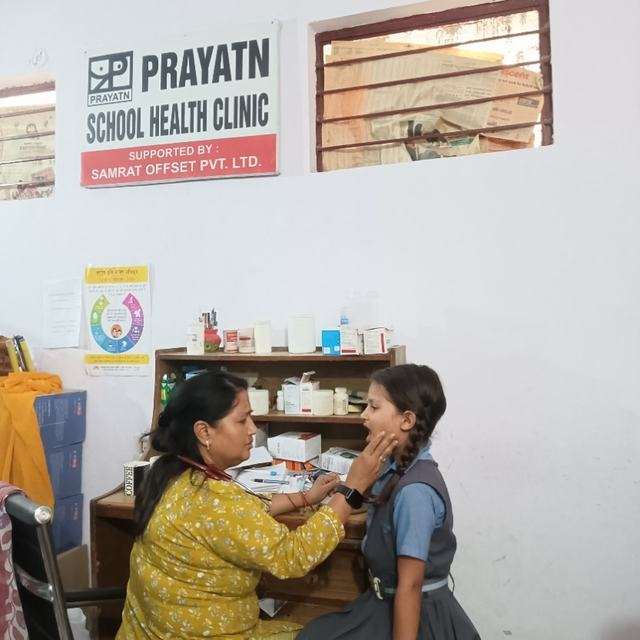
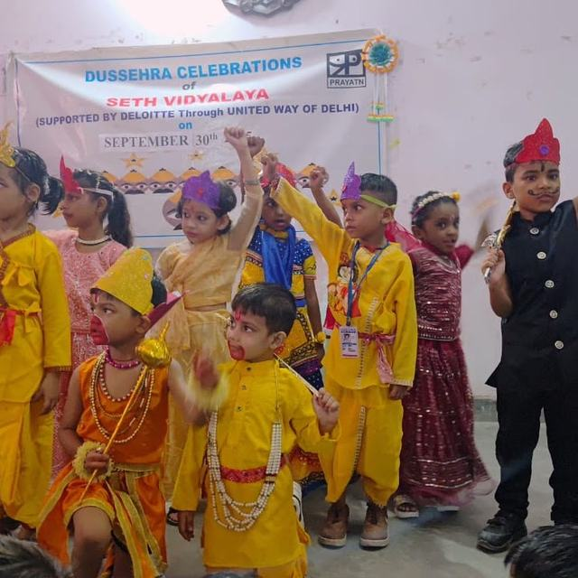
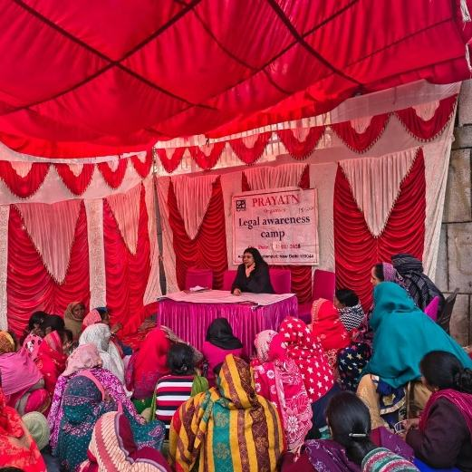
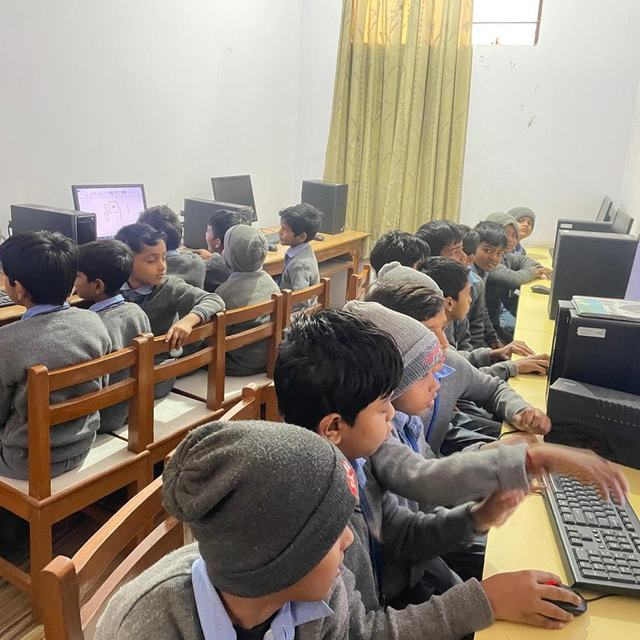
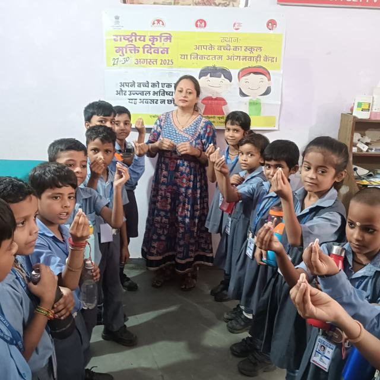
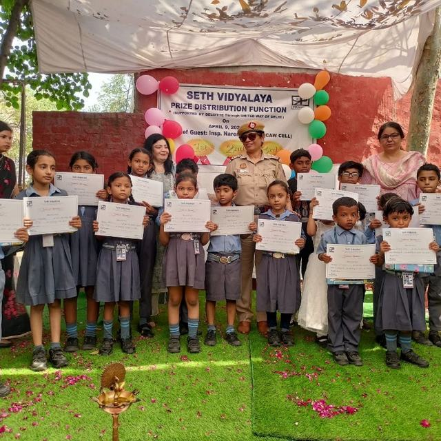
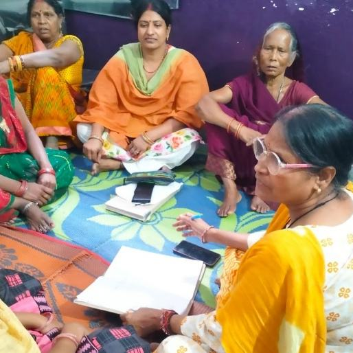
Prayatn runs on people who decided to show up
An hour a week, a professional skill, a child’s school year, a box of books. There is a way for you to be part of this.